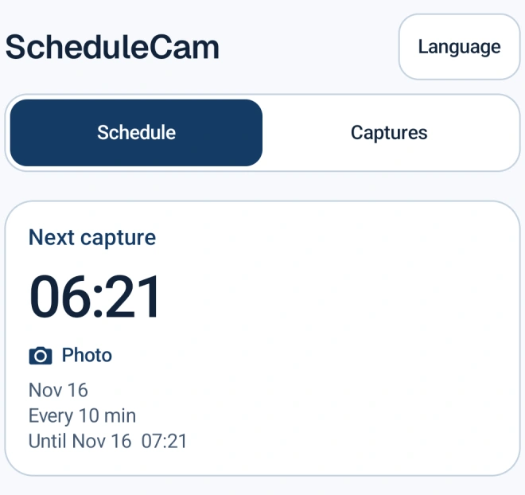

Android 14以降
画面オフでも、 ロック中でも撮影
画面を消したままカメラで写真を撮る、スマホをロックしてから動画の録画を始める。ScheduleCamでは、画面が点いているうちに予約を開始しておくと、指定時刻に撮影を始められます。
設定方法を見る ↓
ディスプレイ消灯後に 予約撮影する手順
- 画面を点けて撮影を設定
「予約」で写真または動画を選び、撮影日時を指定します。音声付き動画を撮る場合は音声を有効にします。
- 「撮影を予約」を押す
表示に従ってカメラ、通知、正確なアラームを許可します。音声付き動画ではマイクも許可し、次回の撮影予定が表示されるまで確認します。
- 画面を消すかスマホをロック
待機中の通知を残し、撮りたい場所にスマホを固定します。予約時刻を過ぎたら「撮影結果」で写真や動画を確認します。
ロック中に 撮れないときは
画面OFFと画面ロックの両方で使えますか？
画面がスリープに入って消灯した状態や、PINなどでスマホをロックした状態に対応する予約撮影です。撮影する端末で待機を開始してから画面を消してください。端末や省電力設定によって撮影が遅れたり、見送られたりする場合があるため、最初は短い試し撮りで確認してください。
バックグラウンド録画は何分できますか？
動画1本の予約は1〜10分です。音声を付ける場合はマイクの許可が必要です。繰り返し録画では動画の長さより長い撮影間隔を指定します。
ディスプレイ消灯と電源オフは同じですか？
撮影待機中はスマホ本体の電源を入れておきます。画面だけを消灯した状態でカメラを使う仕組みです。電源を切った場合や再起動した場合は、起動後にアプリを開いて再予約してください。
待機していたのに写真や動画がありません
予約が有効か、待機中の通知、カメラへのアクセス、正確なアラームの許可、空き容量を確認してください。他のアプリがカメラを使っていると、撮影を見送ることがあります。繰り返し撮影では、バッテリーセーバーやDozeの作動中に短い間隔が15分に調整されます。
スクリーンショットや画面録画もできますか？
ScheduleCamはスマホの前面・背面カメラで被写体の写真や動画を撮影します。Androidの画面に表示される内容を記録する場合は、端末のスクリーンレコード機能を使います。